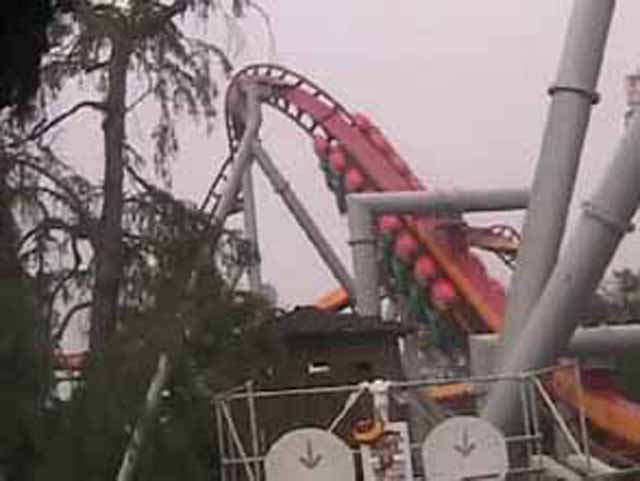
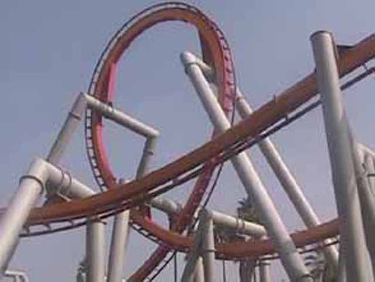
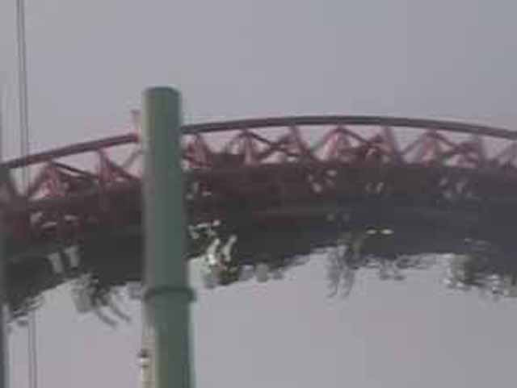
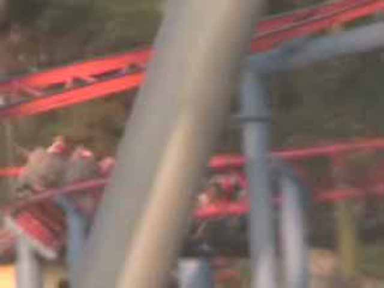
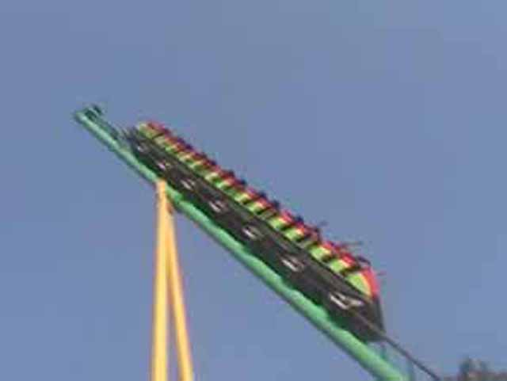
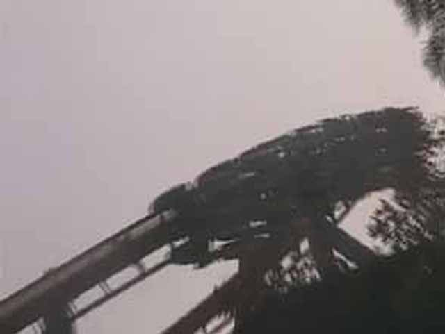

Fall 2006 Photos
Six Flags Magic MountainKnotts Berry FarmParamounts Great America
 Knotts Berry Farm! Stop #2 of the trip. Ghostrider was running alot better today than it was the last 2 Times I was here.
Knotts Berry Farm! Stop #2 of the trip. Ghostrider was running alot better today than it was the last 2 Times I was here.

Silver Bullet! The Second B&M Invert of the trip!

Even though its Forceless, Its still fun and worth riding. Espeacially if the line is less than 5 min long.
Although Celeste hates Splash Mtn, She loves Timber Mtn Log Ride.
Boomerang #2! The only Boomerang of the trip with Headbanging!
They finally added OTSRs to Peroulis Plunge! This means I can ride it without being a Fatass!
Its not as wet as it looks, but the drop has Ejector Air! I LOVE IT!
I still love Wipeout!
 Supreme Scream is taller than drop Zone and has a better start, but Unlike Drop Zone, It feels really Controlled.
Supreme Scream is taller than drop Zone and has a better start, but Unlike Drop Zone, It feels really Controlled.

Xcelerator is a Great ride! One of the best rides of the trip! BTW, Here is a shot of one of its many Overbanked turns!
OMG! Waveswingers open! Everythings opening on Fall 2006 Photos! Freefall, Perolis plunge and now Waveswinger!

Jaguar is long and has many slow twists.
 Jaguar is one of Celestes favorites rides. But forget about Jaguar and check out Montezoomas loop in the backround!
Jaguar is one of Celestes favorites rides. But forget about Jaguar and check out Montezoomas loop in the backround!

Speaking of Montezooma, Its time for a ride on that Great Shuttle Loop. Stupid PGA for taking out Greezed Lightning!
Timberline Twister puts me to sleep.
This is much more exciting than Timberline Twister.
Knotts Berry Farm or Chuck'E'Cheese? You decide!

Yummy (Forceless) B&M Inverted Goodness!
 This is only part of the ride with force. Top Gun has a better ending helix anyways.
This is only part of the ride with force. Top Gun has a better ending helix anyways.
Next Stop, Paramounts Great America!!!!
Paramounts Great America
Home